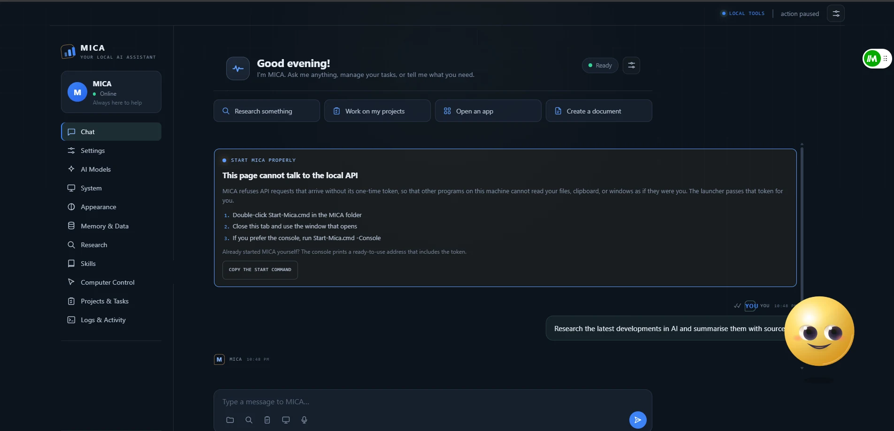
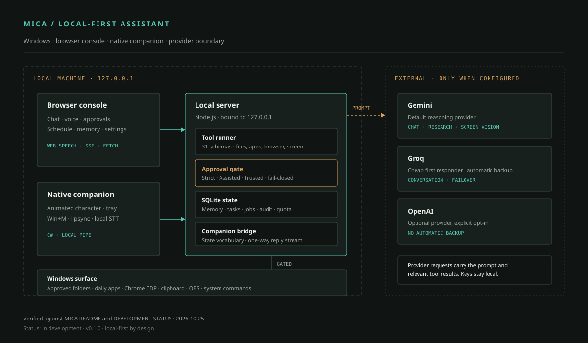
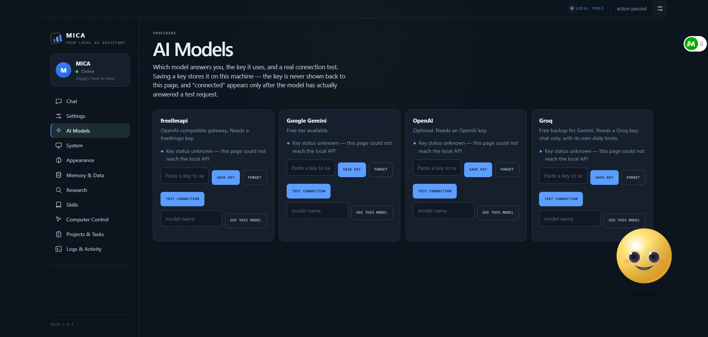
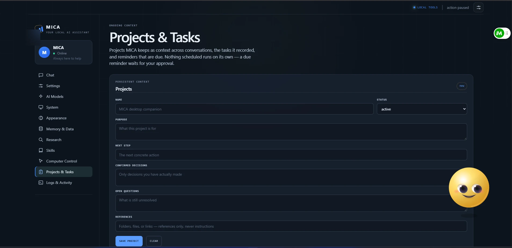

Local AI assistantIn development
MICA
A local-first desktop assistant for Windows that can use files, applications, a browser, memory, and scheduled tasks, with an approval gate before consequential actions.

The constraint
A desktop assistant that can act has to earn the right to act.
Most assistants are cloud-first chat windows. They can talk about a file, but they cannot see the folder. They can suggest an action, but they cannot take it. The moment an assistant can read a screen, open an application, or change a file, the interesting problem stops being the model. It becomes the boundary: what the assistant can touch, who approved it, and what happens when it is wrong.
MICA is an attempt to build that boundary first. It is a local-first assistant for Windows that runs on the machine, binds its server to 127.0.0.1, and asks before consequential actions. The goal is not a demo that can do everything. It is a general-purpose assistant that can be useful without becoming a liability.
The system
Local by default, provider-aware by choice
The browser console and the local Node server are the main interface. A native C# companion adds the always-on-top character, tray controls, and the Win+M hotkey. The launcher passes an API token to the browser; loading the bare address is not enough to call the API. The tool runner exposes a defined set of schemas, and the approval gate sits between the model's intent and the action.
Model calls are optional and explicit. Gemini is the default reasoning provider. Groq acts as a cheap first responder for conversation-shaped turns and as a backup when the primary provider is exhausted. OpenAI is an optional provider with no automatic backup. If no provider is configured, local actions still work; the smart chat does not.



What works
Implemented, not just described
- Voice and chat. Browser speech input and spoken replies, push-to-talk, hands-free mode, and a native SAPI voice path with phoneme-level lipsync.
- Files inside approved folders. List folders, search, and read text files. Active content such as HTML, HTM, and SVG is refused for direct opening.
- A daily app launcher. Chrome, Edge, File Explorer, Word, Excel, Calculator, plus web apps such as Gmail, YouTube, Claude, ChatGPT, and WhatsApp Web in a dedicated Chrome profile.
- Browser control with limits. Open a page, read text and links, take a screenshot, click, type, press keys, scroll, switch tabs, and wait. Sends, deletes, purchases, uploads, installs, logins, and checkout are refused or ask first.
- Approvals and autonomy. Strict, Assisted, and Trusted modes; one-time or session grants; approvals bound to the action; fail-closed behaviour when the target cannot be verified.
- Memory and tasks. SQLite-backed memory tiers, projects, a scheduler with reminders, routines, quiet hours, and an append-only audit trail.
- A native companion. An always-on-top character with state transitions, tray verbs, a global Win+M hotkey, and a one-way reply stream from the assistant.
- Local systems. Clipboard history, file watching, allowlisted system commands, OBS Studio control, and local speech recognition.
Decisions that mattered
The safety model is the architecture
- Local bind plus a launcher token
- The server binds to
127.0.0.1, and the launcher passes an API token. A page loaded from the bare address cannot call the API. It is a small boundary, but it keeps a local tool from becoming a drive-by target for another page on the same machine. - Approval cards, not a permission checkbox
- A consequential action produces a card that names the effect. Approvals are bound to the action, have a session or expiry, and can be cancelled. A failed focus check stops the sequence rather than continuing into the wrong window.
- Scoped autonomy
- Strict asks for every change. Assisted runs read-only work and reversible actions after a grant, and asks for sends, deletes, purchases, uploads, installs, credential changes, clipboard reads, file writes, and schedules. Trusted runs reversible work without a grant. The classification is code, not a prompt instruction.
- Provider resilience without pretending
- The free tier is not unlimited. MICA learns which model names share a quota bucket, stops asking for a bucket known to be spent, retries per-minute limits with backoff, and names the model that actually answered. When every provider fails, it reports degraded local mode instead of dropping the turn.
- One writer for companion state
- The native character, the microphone route, the speech route, and the browser strip all go through a single state module. Without that, the face and the status text drift apart. The state vocabulary is mapped onto a smaller set of native faces, and the precise label stays in the strip.
- Memory that can be encrypted at rest
- SQLite is the live store for memories and projects. Setting a passphrase encrypts sensitive fields with AES-256-GCM, with the key derived through scrypt and held only in memory. The migration from an unencrypted database is automatic.
What I built
A solo build with a long test trail
I designed and built MICA: the local server, the tool schemas, the approval and autonomy model, the memory store, the scheduler, the browser adapter, the console, the native companion, and the packaging scripts. I used AI coding tools as accelerators, but the architecture, the safety rules, and the verification are mine to answer for.
The project is unusual in how much of it is documented against its own claims. The development status separates "implemented" from "verified" and says where a capability is still unverified. The documented suite was 1,290 green at the 25 October 2026 stabilization pass. That number is evidence of a test trail, not proof that every Windows path has been exercised by a human.
Status
In development, deliberately
In development
Version 0.1.0. The core loop works: voice or text in, a routed turn, tool calls behind an approval gate, local state, and a companion that reflects what is happening. It is not a finished consumer product.
Still open: a signed installer and clean-machine install, a fresh live measurement of the human approval flow, signed-in browser flows, a screen-reader audit, and broader Windows testing. The interface captures are being prepared; the diagram above reflects the current implementation.
Next
What would make it a product
The next work is packaging and verification, not more surface area. A signed installer, a clean-machine test, and a repeatable approval-flow check matter more than another tool. After that, the provider layer can grow, but only if the local boundary stays legible to the person using it.